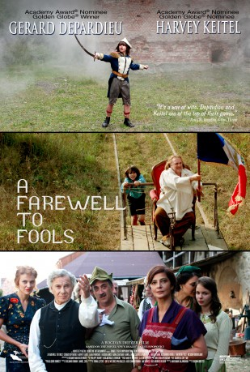

#6485 Bon Voyage, ihr Idioten
 
 IMDB-Wertung: 5.5 / 10
IMDB-Wertung: 5.5 / 10  Metascore: 0
Metascore: 0 
Once upon a time, during WWII, somewhere in Nazi occupied Romania, a night of comic misadventures ensues when a boy discovers a dead soldier. The German authorities demand that the perpetrator must be identified or the town leaders will be shot the following morning. In their desperation, led by Father Johanis (Harvey Keitel), their salvation seems to lie in convincing the town "fool", Ipu (Gérard Depardieu), to agree to confess, and save them all with his sacrifice. The comedy and darker sides of human nature race toward the deadline where one cannot help but wonder who, in fact, is the actual "fool"?
Jahr: 2013
Dauer: 80 Minuten
FSK: 12
Land: Rumänien Studio: Farbfilm Home EntertainmentTonspuren: DTS - ,
Untertitel:
Auflösung: 1080p (1920x808) Größe: 3665 MB
Genre: Drama, Komödie, Krieg
Regisseur: Bogdan Dumitrescu
Drehbuch: Titus Popovici
Soundtrack:
Darsteller:
 Gérard Depardieu als Ipu
Gérard Depardieu als Ipu Harvey Keitel als Father Johanis
Harvey Keitel als Father Johanis- Laura Morante als Margherita
- Bogdan Iancu als Alex
- Alexandru Bindea als Gossman
- Gheorghe Visu als Notary
- Daniela Nane als Doctor's wife
- Andrei Seusan als Friederich
- Richard Bovnoczki als Filip
- Nicodim Ungureanu als Mayor
- Hubert Damen als Doctor
- Adina Cartianu als Clara
- Gabriela Baluta als Linda
- Dragos Stemate als Policeman 1
- Lino Damiani als Policeman 2
- Iulia Boros als Flora
- Edgardo Viola als Peasant
- Dan Moldovan als German officer
- Ion Necula als Florin
- Andras Demeter als Sculptor
- Constantin Draganescu als Markus
- Uwe Fellensiek als Cpt Braun
- Valentin Uta als Soldier 1
- Adelina Ilie als Maid
- Petro Pizzo als Notary's assistant
- Razvan Hîncu als German Soldier
- Rellu Soare als Friend
Datei: X:\2013(A-F)\Bon Voyage, ihr Idioten (2013, FSK12, 1920x808).mkv seit 28.06.2017
Festplatte: HD 2012(N-Z)-2013(A-H)
 Es gibt insgesamt 127 Filme in der Gruppe '2013(A-F)'
Es gibt insgesamt 127 Filme in der Gruppe '2013(A-F)'